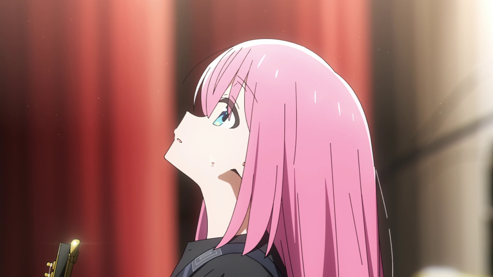

Character Stats
Pendidikan & Pengalaman
Shuka High School
ActiveLead Guitarist & Lyricist - Kessoku Band
(2022-Sekarang)- Bertanggung jawab penuh atas aransemen melodi gitar utama band.
Content Creator - Channel "guitarhero"
4 Tahun Terakhir- Memproduksi, merekam, dan mengedit video cover gitar secara mandiri
- Berhasil membangun basis penggemar online yang besar dengan total lebih dari 80.000 subscribers
Part Timer - Live House "STARRY"
Musiman- Staf pembantu di tempat pertunjukan musik milik Seika.
- Tugas meliputi menyajikan minuman, bersih-bersih, hingga menyambut tamu